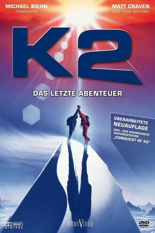

#6209 K2 - Das letzte Abenteuer
Alternativ: K2
 
 IMDB-Wertung: 6.2 / 10
IMDB-Wertung: 6.2 / 10  Metascore: 0
Metascore: 0 
Die begeisterten Hobbybergsteiger Taylor Brooks und Harold Jameson erhalten unverhofft die Chance, an einer Expedition auf den K2, den schwierigsten Berg der Welt, teilzunehmen. Für die beiden Freunde wird ein Traum wahr, doch die Reise zum Dach der Welt steht unter einem schlechten Stern: die Träger springen ab, es gibt Spannungen in der Crew, Expeditionsleiter Phillip Claiborne erkrankt schwer, der erste Ansturm auf den Gipfel mißlingt und die Bergsteiger bleiben verschollen. Taylor und Harold springen ein und erreichen überglücklich den Gipfel des K2 in 8611 Metern Höhe. Während des Abstiegs schlägt urplötzlich das Wetter um und innerhalb kürzester schweben die beiden in Lebensgefahr. Im Basislager kann man nicht mehr länger auf ihre Ankunft warten. Claiborne muß dringend ins Krankenhaus geflogen werden, sonst stirbt er. Die Zeit für Taylor und Harold läuft gnadenlos ab.
Jahr: 1991
Dauer: 105 Minuten
FSK: 16
Land: England Studio: EuroVideoTonspuren: DD2.0 - ,
Untertitel:
Auflösung: 1080p (1920x1032) Größe: 5969 MB
Genre: Action, Thriller, Drama, Abenteuer
Regisseur: Franc Roddam
Drehbuch: Grant Nieporte
Soundtrack:
Darsteller:
 Michael Biehn als Taylor
Michael Biehn als Taylor Matt Craven als Harold
Matt Craven als Harold- Elena Wohl als Tracey
 Blu Mankuma als Man on Wheelchair
Blu Mankuma als Man on Wheelchair- Julia Nickson als Cindy
 David Cubitt als Peter
David Cubitt als Peter- Luca Bercovici als Dallas
 Patricia Charbonneau als Jacki
Patricia Charbonneau als Jacki Raymond J. Barry als Claiborne
Raymond J. Barry als Claiborne- Kehli O'Byrne als Pam
- Tim Van Rellim als Steiner
- Gaby Dellal als French woman
- Annie Grindlay als Lisa
- Charles Oberman als Tony
- Christopher M. Brown als Carl
 Leslie Carlson als Dexter
Leslie Carlson als Dexter- Edward Spatt als Mike
- Andrew Spatt als Todd
- Hiroshi Fujioka als Takane
- Antony Holland als Priest
- Lillian Carlson als Secretary
- Laurie Briscoe als Handsome Woman
- Jamal Shah als Malik
- Badi Uzzaman als Ibrahim
- Rajab Shah als Balti porter
- Ibrahmim Zahid als Balti porter
- Ali Ka als Balti porter
- Ali Khan als Balti porter
- Abdul Karim als Balti porter
- Ghulam Abbas als Balti porter
- Asghar Khan als Balti porter
- Mr. Shaban als Balti porter
- Nazir Sabir als Balti liaison officer
- Shah Jehan als Balti liaison officer
Datei: X:\1991\K2 - Das letzte Abenteuer (1991, FSK16, 1920x1032).mkv seit 16.05.2017
Festplatte: HD 1987-1991
 Es gibt insgesamt 53 Filme in der Gruppe '1991'
Es gibt insgesamt 53 Filme in der Gruppe '1991'